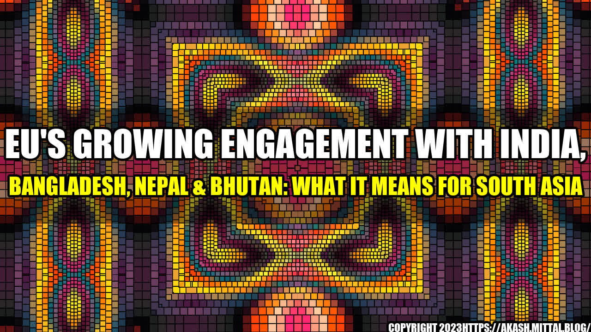

EU's Growing Engagement with India, Bangladesh, Nepal & Bhutan: What it means for South Asia
A few years ago, my friend Prisha traveled across South Asia for her research project on the impact of globalization on the region. During her travels, she came across many small businesses in India, Bangladesh, Nepal, and Bhutan that were struggling to survive. Many of them lacked access to funds, markets, and technology.
Fast forward to today, the European Union (EU) has been increasingly engaging with these countries to promote economic growth, reduce poverty, and improve governance in the region. The EU's engagement with South Asia is driven by its interest in expanding trade and investment opportunities, strengthening regional cooperation, and promoting human rights, democracy, and sustainable development.
The benefits of EU's engagement with South Asia
The EU's growing engagement with South Asia can have several potential benefits for the region. Here are some notable examples:
Boosting trade and investment
The EU is one of the largest trading powers in the world, accounting for over 15% of global trade. By engaging with South Asia, the EU seeks to increase its trade and investment in the region, especially in sectors such as textiles, agriculture, and services. This can help boost the local economies, create jobs, and improve people's standard of living.
Enhancing regional connectivity
The EU is keen on promoting regional integration and connectivity in South Asia, which can help improve trade and commerce within the region. The EU has been supporting various infrastructure projects in the region, such as the development of seaports, highways, and railways. This can help improve transport links between South Asian countries and facilitate regional trade and cooperation.
Strengthening governance and human rights
The EU has been supporting various initiatives in South Asia to improve governance, human rights, and democracy. For example, the EU has been funding projects to promote media freedom, anti-corruption efforts, and gender equality in the region. This can help strengthen the rule of law and create a conducive environment for economic growth and social development.
The implications and challenges of EU's engagement with South Asia
The EU's engagement with South Asia is not without its implications and challenges. Here are some key considerations:
Competition with other global powers
The EU's engagement with South Asia is likely to face stiff competition from other global powers such as China, Japan, and the United States. These countries have also been increasing their engagement with South Asia, especially in terms of trade and investment. The competition can create tensions and geopolitical risks in the region.
Different priorities and values
The EU's priorities and values may not always align with those of South Asian countries. For example, the EU's focus on human rights and environmental protection may clash with the region's emphasis on economic growth and national sovereignty. The differences can create tensions and misunderstandings between the EU and South Asian partners.
Capacity constraints and implementation challenges
The EU's engagement with South Asia requires significant resources, expertise, and coordination. However, many South Asian countries face capacity constraints and implementation challenges in terms of governance, infrastructure, and human resources. This can hinder the effective implementation of EU-funded projects and initiatives in the region.
Conclusion
The EU's growing engagement with India, Bangladesh, Nepal, and Bhutan can have significant implications for South Asia. The benefits of increased trade and investment, enhanced regional connectivity, and strengthened governance and human rights can create opportunities for the region. However, the competition with other global powers, differences in priorities and values, and capacity constraints and implementation challenges can pose risks and challenges for the EU's engagement with South Asia.
Overall, the EU's engagement with South Asia should be based on mutual respect, trust, and cooperation, and should aim to promote inclusive and sustainable development in the region.
References
Hashtags: #EUGlobalEngagement #SouthAsia #Trade #Investment #RegionalConnectivity #Governance #HumanRights #SustainableDevelopment
Category: International Relations, Economic Development, Governance, Sustainability
Curated by Team Akash.Mittal.Blog
Share on Twitter Share on LinkedIn